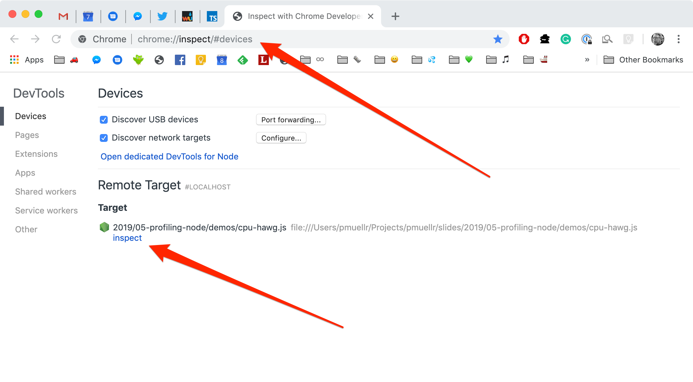

# profiling Node.js applications Patrick Mueller [`@pmuellr`](https://twitter.com/pmuellr), [`muellerware.org`](http://muellerware.org)<br> principal software engineer at [Elastic](https://elastic.co)<br> 2019-06-11 <div class="smaller"><div class="smaller"><div class="smaller"> <a href="http://pmuellr.github.io/slides/2019/05-profiling-node"> http://pmuellr.github.io/slides/2019/05-profiling-node </a> <br> <a href="http://pmuellr.github.io/slides/2019/05-profiling-node/slides.pdf"> http://pmuellr.github.io/slides/2019/05-profiling-node/slides.pdf </a> <br> <a href="http://pmuellr.github.io/slides/"> http://pmuellr.github.io/slides/ </a> (all of Patrick's slides) </div></div></div> <div class="toolBar no-print"> <div class="navHelp" title="use the cursor keys to navigate, 'n' to toggle nav buttons, 's' to toggle control panel"> <img class="button-1st" height=16 src="../../glyphicons_free/glyphicons/png/glyphicons_171_fast_backward.png"> <img class="button-prev" height=16 src="../../glyphicons_free/glyphicons/png/glyphicons_172_rewind.png"> <img class="button-next" height=16 src="../../glyphicons_free/glyphicons/png/glyphicons_176_forward.png"> </div> <div> </div> <div class="controlPanel" title="'s' to toggle control panel"> <img class="button-hd" height=16 src="../../glyphicons_free/glyphicons/png/glyphicons_391_video_hd.png" title="toggle HD"> </div> </div> --- layout: true <div class="page-context"> <span class="smaller"><span class="smaller"><span class="smaller"> <tt></tt> </span></span></span> </div> <div class="page-icon"> <span class="smaller"><span class="smaller"><span class="smaller"> <tt>profiling Node.js applications</tt> </span></span></span> </div> {{content}} <div class="toolBar no-print"> <div class="navHelp" title="use the cursor keys to navigate, 'n' to toggle nav buttons, 's' to toggle control panel"> <img class="button-1st" height=16 src="../../glyphicons_free/glyphicons/png/glyphicons_171_fast_backward.png"> <img class="button-prev" height=16 src="../../glyphicons_free/glyphicons/png/glyphicons_172_rewind.png"> <img class="button-next" height=16 src="../../glyphicons_free/glyphicons/png/glyphicons_176_forward.png"> </div> <div> </div> <div class="controlPanel" title="'s' to toggle control panel"> <img class="button-hd" height=16 src="../../glyphicons_free/glyphicons/png/glyphicons_391_video_hd.png" title="toggle HD"> </div> </div> --- ## what is profiling? * gaining insight into what your code is doing * typically involving finding out: * why your code is so slow! * what are you doing with all that memory! --- ## why should you profile your code? * save money * run with less RAM * run with less CPU * delight customers * your app runs faster --- ## what kind of profiling for Node.js? **<u>performance</u>** with V8's CPU profiler **<u>memory</u>** with V8's heap snapshots Debugging built into V8, accessed by Chrome Dev Tools. --- ## using the tools * start your app with the Node.js `--inspect` option * open URL [`chrome://inspect/`](chrome://inspect/) in Chrome * click the **inspect** link under **Remote Target** ---  --- layout: true <div class="page-context"> <span class="smaller"><span class="smaller"><span class="smaller"> <tt></tt> </span></span></span> </div> <div class="page-icon"> <span class="smaller"><span class="smaller"><span class="smaller"> <tt>profiling Node.js applications</tt> </span></span></span> </div> {{content}} <div class="toolBar no-print"> <div class="navHelp" title="use the cursor keys to navigate, 'n' to toggle nav buttons, 's' to toggle control panel"> <img class="button-1st" height=16 src="../../glyphicons_free/glyphicons/png/glyphicons_171_fast_backward.png"> <img class="button-prev" height=16 src="../../glyphicons_free/glyphicons/png/glyphicons_172_rewind.png"> <img class="button-next" height=16 src="../../glyphicons_free/glyphicons/png/glyphicons_176_forward.png"> </div> <div> </div> <div class="controlPanel" title="'s' to toggle control panel"> <img class="button-hd" height=16 src="../../glyphicons_free/glyphicons/png/glyphicons_391_video_hd.png" title="toggle HD"> </div> </div> --- class: center, middle # profiling performance --- layout: true <div class="page-context"> <span class="smaller"><span class="smaller"><span class="smaller"> <tt>profiling performance</tt> </span></span></span> </div> <div class="page-icon"> <span class="smaller"><span class="smaller"><span class="smaller"> <tt>profiling Node.js applications</tt> </span></span></span> </div> {{content}} <div class="toolBar no-print"> <div class="navHelp" title="use the cursor keys to navigate, 'n' to toggle nav buttons, 's' to toggle control panel"> <img class="button-1st" height=16 src="../../glyphicons_free/glyphicons/png/glyphicons_171_fast_backward.png"> <img class="button-prev" height=16 src="../../glyphicons_free/glyphicons/png/glyphicons_172_rewind.png"> <img class="button-next" height=16 src="../../glyphicons_free/glyphicons/png/glyphicons_176_forward.png"> </div> <div> </div> <div class="controlPanel" title="'s' to toggle control panel"> <img class="button-hd" height=16 src="../../glyphicons_free/glyphicons/png/glyphicons_391_video_hd.png" title="toggle HD"> </div> </div> --- ## what does V8's CPU profiler do? * **start profiler**: at regular intervals, V8 will capture current stack trace, with time stamp, and source file / line numbers * **stop profiler**: profiler will aggregate the stack trace information, and produce a JSON data structure for analysis tools --- ## what does Chrome DevTools show? * timeline of stacks of functions executed * sort by aggregated function execution time * intro: [Google Developers: Speed Up JavaScript Execution](https://developers.google.com/web/tools/chrome-devtools/profile/rendering-tools/js-execution?hl=en) --- ## demo: profiling `cpu-hawg` `node --inspect` [`cpu-hawg.js`][cpu-hawg.js] [cpu-hawg.js]: https://pmuellr.github.io/slides/2019/05-profiling-node/demos/cpu-hawg.js --- layout: true <div class="page-context"> <span class="smaller"><span class="smaller"><span class="smaller"> <tt></tt> </span></span></span> </div> <div class="page-icon"> <span class="smaller"><span class="smaller"><span class="smaller"> <tt>profiling Node.js applications</tt> </span></span></span> </div> {{content}} <div class="toolBar no-print"> <div class="navHelp" title="use the cursor keys to navigate, 'n' to toggle nav buttons, 's' to toggle control panel"> <img class="button-1st" height=16 src="../../glyphicons_free/glyphicons/png/glyphicons_171_fast_backward.png"> <img class="button-prev" height=16 src="../../glyphicons_free/glyphicons/png/glyphicons_172_rewind.png"> <img class="button-next" height=16 src="../../glyphicons_free/glyphicons/png/glyphicons_176_forward.png"> </div> <div> </div> <div class="controlPanel" title="'s' to toggle control panel"> <img class="button-hd" height=16 src="../../glyphicons_free/glyphicons/png/glyphicons_391_video_hd.png" title="toggle HD"> </div> </div> --- class: center, middle # profiling memory --- layout: true <div class="page-context"> <span class="smaller"><span class="smaller"><span class="smaller"> <tt>profiling memory</tt> </span></span></span> </div> <div class="page-icon"> <span class="smaller"><span class="smaller"><span class="smaller"> <tt>profiling Node.js applications</tt> </span></span></span> </div> {{content}} <div class="toolBar no-print"> <div class="navHelp" title="use the cursor keys to navigate, 'n' to toggle nav buttons, 's' to toggle control panel"> <img class="button-1st" height=16 src="../../glyphicons_free/glyphicons/png/glyphicons_171_fast_backward.png"> <img class="button-prev" height=16 src="../../glyphicons_free/glyphicons/png/glyphicons_172_rewind.png"> <img class="button-next" height=16 src="../../glyphicons_free/glyphicons/png/glyphicons_176_forward.png"> </div> <div> </div> <div class="controlPanel" title="'s' to toggle control panel"> <img class="button-hd" height=16 src="../../glyphicons_free/glyphicons/png/glyphicons_391_video_hd.png" title="toggle HD"> </div> </div> --- ## what are V8 heap snapshots? * JSON file describing every reachable JavaScript object in the application; taking a snapshot always starts with a garbage collection * JSON files are ... large; figure 2x heap memory allocated by Node.js --- ## what does Chrome DevTools show? * count / size of objects grouped by **class** * compare old and new heapshots to show object diff counts * follow object references, both directions * intro: [Google Developers: Viewing Heap Snapshots](https://developers.google.com/web/tools/chrome-devtools/profile/memory-problems/heap-snapshots) --- ## demo: profiling `mem-hawg` `node --inspect` [`mem-hawg.js`][mem-hawg.js] [mem-hawg.js]: https://pmuellr.github.io/slides/2019/05-profiling-node/demos/mem-hawg.js --- ## what kind of output can you get? * large JSON file - could be 100's of MB; figure 2x allocated heap * can "diff" snapshots to help identify leaks * can drill into or out from references in Chrome Dev Tools; references / referenced by --- layout: true <div class="page-context"> <span class="smaller"><span class="smaller"><span class="smaller"> <tt></tt> </span></span></span> </div> <div class="page-icon"> <span class="smaller"><span class="smaller"><span class="smaller"> <tt>profiling Node.js applications</tt> </span></span></span> </div> {{content}} <div class="toolBar no-print"> <div class="navHelp" title="use the cursor keys to navigate, 'n' to toggle nav buttons, 's' to toggle control panel"> <img class="button-1st" height=16 src="../../glyphicons_free/glyphicons/png/glyphicons_171_fast_backward.png"> <img class="button-prev" height=16 src="../../glyphicons_free/glyphicons/png/glyphicons_172_rewind.png"> <img class="button-next" height=16 src="../../glyphicons_free/glyphicons/png/glyphicons_176_forward.png"> </div> <div> </div> <div class="controlPanel" title="'s' to toggle control panel"> <img class="button-hd" height=16 src="../../glyphicons_free/glyphicons/png/glyphicons_391_video_hd.png" title="toggle HD"> </div> </div> --- class: center, middle # other tools --- ## profiling tools * [NodeSource N|Solid](https://nodesource.com/products/nsolid) * enhanced Node runtime and console with profiling tools and visualizers * [NearForm Clinic.js](https://clinicjs.org/) * command-line cpu profiling tools and visualizers --- ## hacking CPU profiles https://pmuellr.github.io/no-pro/ * alt-visualizer for v8 cpu profile files * group functions by package and module --- layout: true <div class="page-context"> <span class="smaller"><span class="smaller"><span class="smaller"> <tt></tt> </span></span></span> </div> <div class="page-icon"> <span class="smaller"><span class="smaller"><span class="smaller"> <tt>profiling Node.js applications</tt> </span></span></span> </div> {{content}} <div class="toolBar no-print"> <div class="navHelp" title="use the cursor keys to navigate, 'n' to toggle nav buttons, 's' to toggle control panel"> <img class="button-1st" height=16 src="../../glyphicons_free/glyphicons/png/glyphicons_171_fast_backward.png"> <img class="button-prev" height=16 src="../../glyphicons_free/glyphicons/png/glyphicons_172_rewind.png"> <img class="button-next" height=16 src="../../glyphicons_free/glyphicons/png/glyphicons_176_forward.png"> </div> <div> </div> <div class="controlPanel" title="'s' to toggle control panel"> <img class="button-hd" height=16 src="../../glyphicons_free/glyphicons/png/glyphicons_391_video_hd.png" title="toggle HD"> </div> </div> --- class: center, middle # `fin`